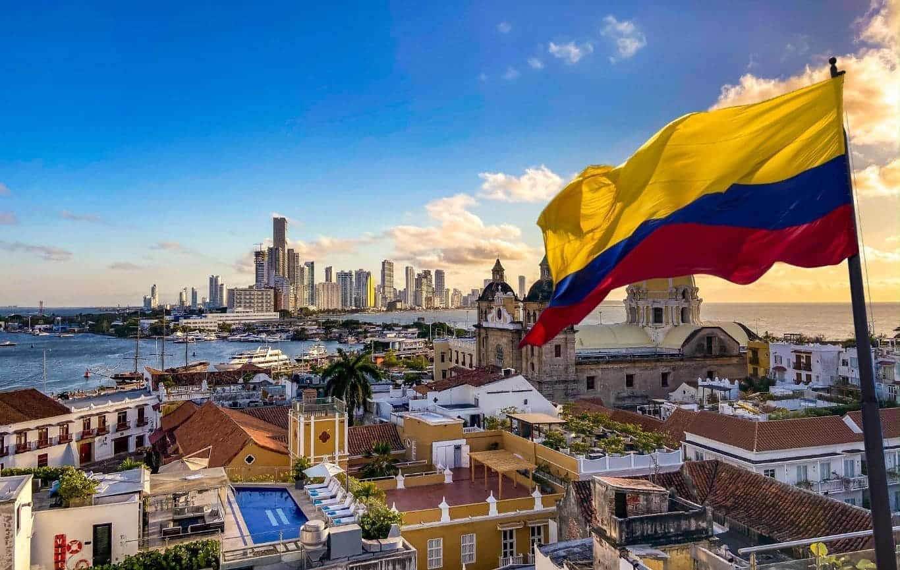

Sara Latorre
About me
My name is Sara, and I am French-Colombian. I moved to Colombia with my family at the beginning of last December. I have a prior degree in digital communication, as I have always been drawn to new technologies, the web, and the field of programming. In my free time, I enjoy reading, cooking and listening to music.

Colombia is a country located in the northwest of South America, bordered by the Caribbean Sea and the Pacific Ocean. It is known for its rich culture shaped by Indigenous, European, and African influences. The country offers a vast diversity of landscapes, from the Andes Mountains and Amazon rainforest to the Caribbean and Pacific coasts, making it one of the most geographically diverse countries in the world. It is also know for its music, dance, festivals, gold & emeralds, and delicious food!